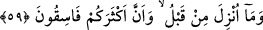

ekber, Allahu ekber” derken “Allah Teâlâ’nın azamet ve kibriyâsı keşke tecelli etse”;
“Eşhedü ellâ ilâhe illallah” derken, “Keşke vahdâniyyeti tecelli etse”; “Eşhedü enne
Muhammede’r-Rasûlullah” derken “Keşke hakkaniyyeti tecelli etse”; “Hayye ale’s-
salah ve Hayye ale’l-felah” derken “Keşke taleb edenin talebi taleb edilenden
gerçekleşse”; “Allahu ekber, Allahu ekber, Lâ ilahe illallah” derken de “Keşke O’nun
zâtı tecellî etse, maksat tamamlanır, murad da hâsıl olur.” derdi.
Ezânın fazîletleri çoktur: “Yolcunun ardından ezân okunsa, yolcu seferden dönene
kadar emniyette olur. Yeni doğan çocuğun bir kulağına ezân, diğer kulağına da kamet
okunursa çocuk “ümmüs-sıbyan” denilen hastalıktan emin olur. Çocuk bu hastalığa
yakalandıktan sonra okumak da böyledir. Yangın, sel, soğuk gibi afetlerde ya da
herhangi bir şeyden korkulduğunda ezân okumak insanı bu korkulardan emin kılar. el-
Esrarû’l-Muhammediyye’de böyle geçmektedir.
Ezân, hakikat bakımından Allah’a dâvete işarettir. Bu dâveti yapan müezzin de
Peygamber (s.a.)’in vârisidir. Gaflet ehlini ve hakla aralarında perde olanları Allah’a
kurbiyete ve hitap makamına çağırmaktadır. Hakka kulaklarını tıkayan sağırlar, cahillik
ve sapıklıkta kemâle ermeleri sebebiyle bu dâvet ve dâvetçiyle alay ederler. Kim hazır
bulunup kulak veren kimselerdense izzet sâhibi ve hamde lâyık olan Allah’ın davetine
icâbet eder. İzzet sâhibi Allah’ın huzûruna varmanın câzibesine kapılır, cemâl
müşâhedesiyle zâtı idrâk eder ve vuslat sırlarının ganimetlerini elde eder.
Ey genç! Yaşlıların öğüdüne karşı çıkma
Çünkü yaşlının görüşü, gencin bahtından yeğdir
59. (Onlara) şöyle de: Ey kitap ehli! Yalnızca Allah’a, bize indirilene, daha önce
indirilenlere inandığımız ve sizin çoğunuzun da yoldan çıkmış kimseler olduğu için
mi bizden hoşlanmıyorsunuz?
Rivayet edildiğine göre yahûdîlerden bir topluluk Rasûlullah (s.a.)’e dîn hakkında
soru sordular. Hz. Peygamber (a.s.) da: “Biz, Allah’a, bize indirilene, İbrâhim’e,
İsmâil’e, İshâk’a, Yâ’kub’a, ve oğullarına indirilenlere, Îsâ’ya, Mûsâ’ya ve diğer
peygamberlere Rableri tarafından verilenlere îman ettik. Onları birbirinden ayırt
etmeyiz. Biz O’na teslim olanlarız.” (Âl-i İmran, 3/84) buyurdu.
Îsâ (a.s.)’ın da anıldığını duyunca müslümanlara “Dünyâda ve âhirette dîn mensupları
içinde sizden daha nasipsizini, sizin dîninizden daha şerli bir dîni bilmiyoruz” dediler.
Bunun üzerine bu âyet indi.
O günahkar yahûdîlere “şöyle de: Ey kitap ehli! Yalnızca Allah’a, bize indirilene”,